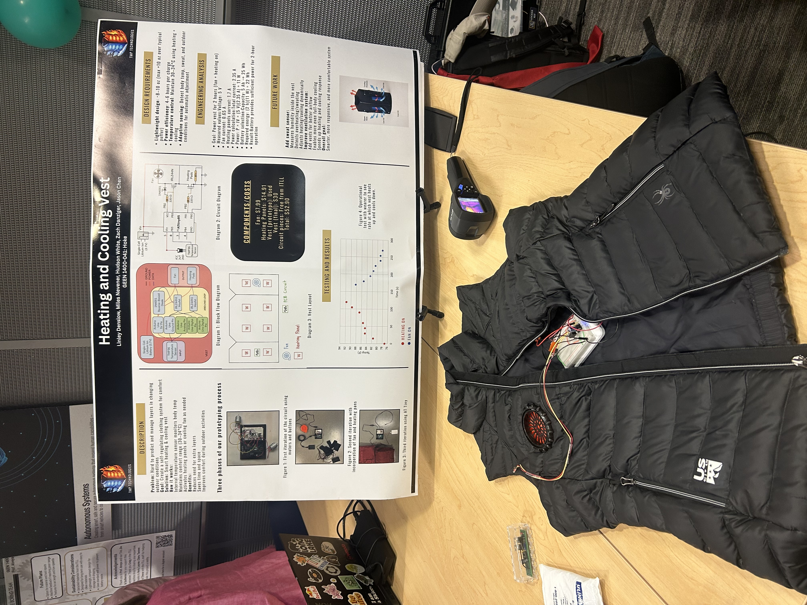
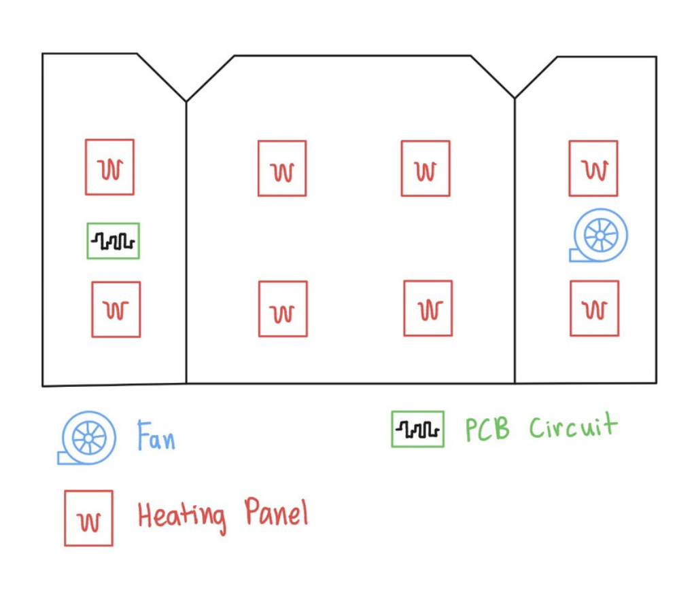
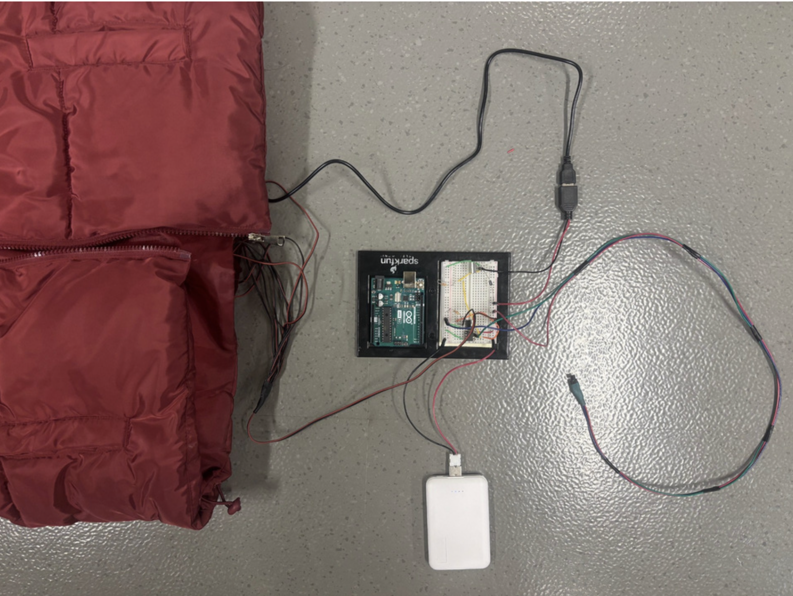
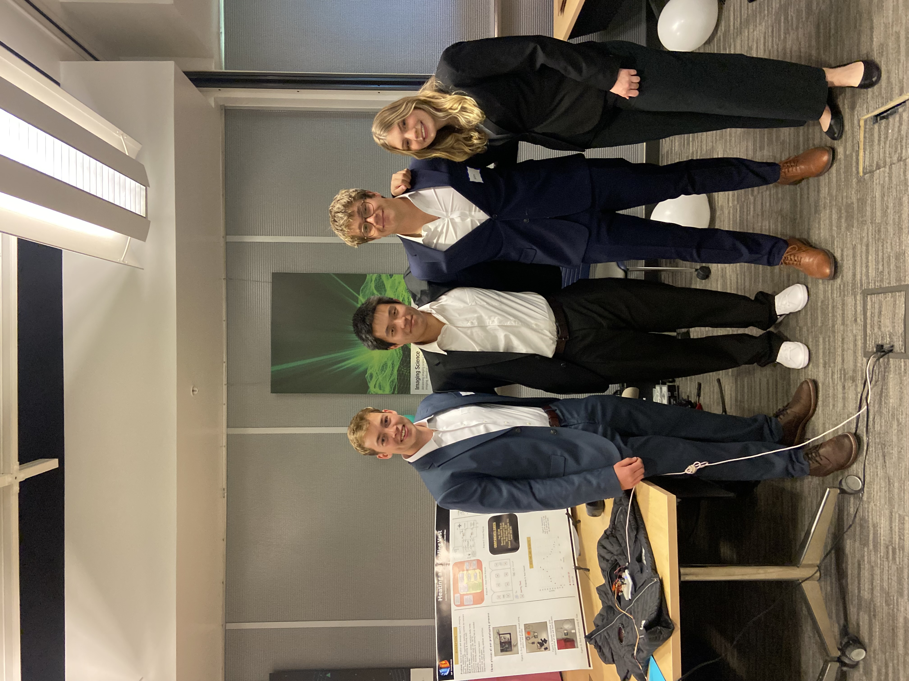

01
Heating & Cooling Vest



Project Overview
For an embedded systems engineering project, I led a five-person team developing a heating and cooling vest intended for outdoor use in Boulder's changing temperatures. Our goal was to create an affordable, wearable temperature regulation system that could respond to changing conditions, whether you're hiking, biking, or just walking around campus!
This project combined physical design, electronics, temperature sensing, and embedded programming. We worked within a target budget of less than $60 while considering temperature regulation, bulkiness, battery life, and durability.
My Role & Design Process
As project lead, I helped coordinate the team's work and guide the development process. Our design incorporated an Arduino-based control system, a TMP36 temperature sensor, and a custom circuit board. Demonstrating quick-learning and in order to help lead my team as best I could, I gained as much knowledge as I could on circuit design, progamming an Arduino, and following the engineering design process.
One important part of the process was considering how the electronic components would work together within the vest's physical and power constraints. This required balancing the desired temperature response with energy consumption and the practical limitations of a wearable design. We did this through engineering analysis and testing.
Engineering Constraints & Challenges
The project required us to consider several competing priorities: affordability, temperature control, portability, and operating time. Our design target was a temperature range of approximately 30–34°C, with a longer-term operating-time goal of four to six hours.
When we ran into a challenge nearing the end of our deadline and our circuit stopped working, we were forced to recondider our priorities. As we transferred our circuit to a less bulky PCB, we lost the functionality we were hoping for. After calling a meeting as a team, tossing around ideas, and reaching a compromise, we decided that the final functionality of reaching our target temperature quickly and consistently was more important than a sleeker fit of our circuit. We transitioned back to a previous, working prototype and created a lazer-cut casing in order to fit the bulkier circuit board safely into a newly sewn pocket within the vest. Facing this problem taught me how to communicate and reach consensus within a team, problem-solve under pressure, and take initiative as a leader.
Skills & Takeaways
